Poem 01A Poppy Flower · Reedey Gul
A Poppy FlowerArchive version
0:000:00
Volume
Reedey GulSardar Ali Takkar
0:000:00
Volume
This is a public poetry archive rooted in Pashto culture. The source scans stay beside the poems, the Roman Pashto is written for natural spoken reading, and permitted recordings can play directly inside the website.
This room shows only recordings that are available in the archive. Poems without recordings still appear in the reading section with a simple note.
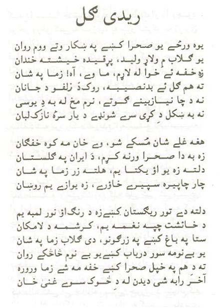
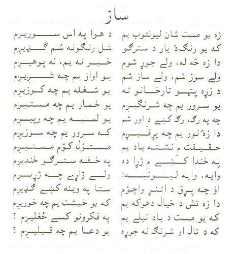
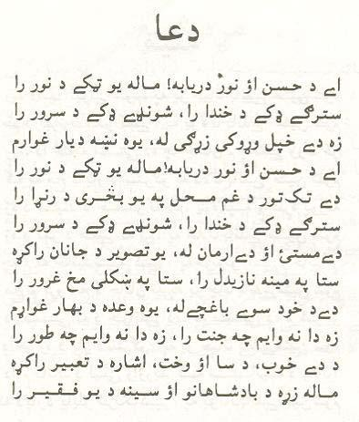
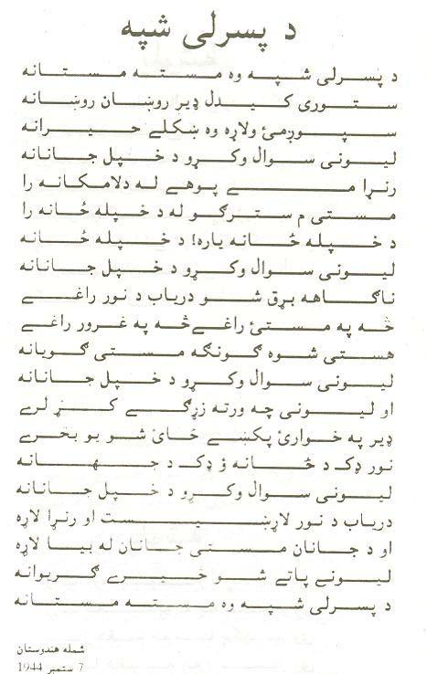
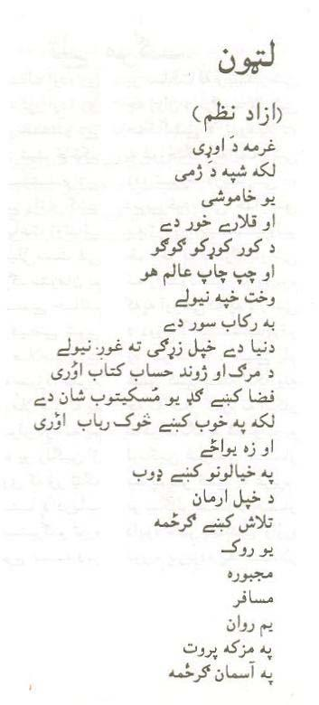
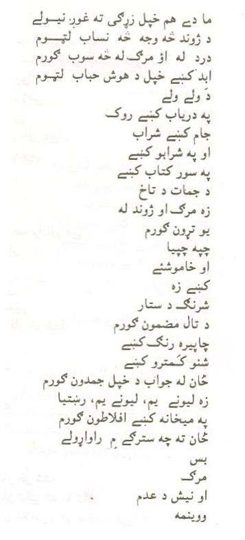
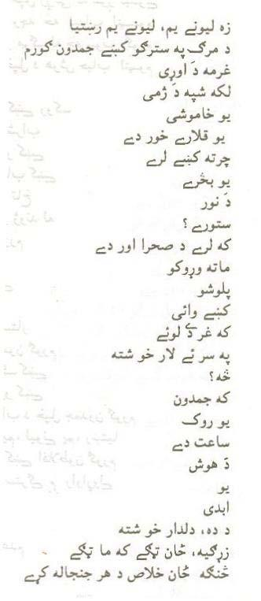
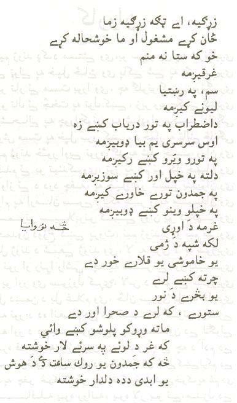
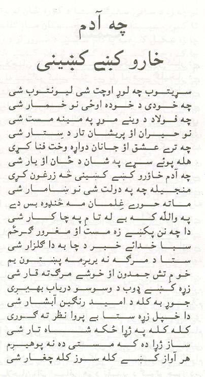
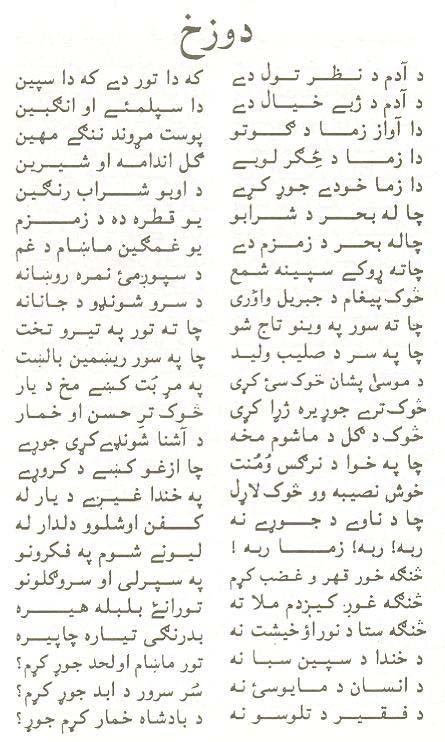
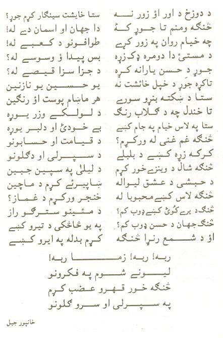
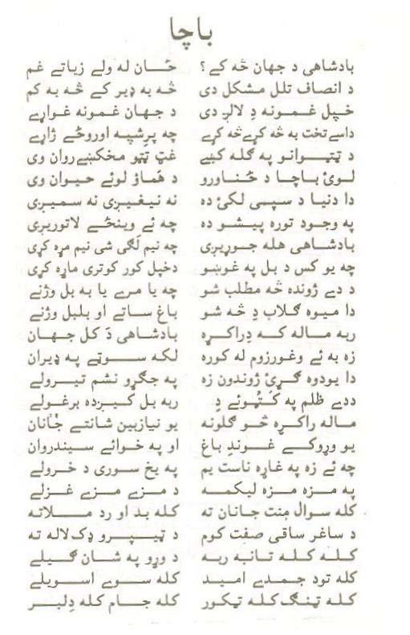
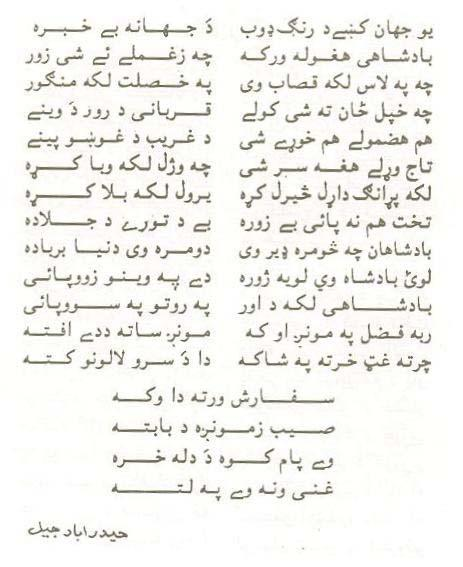
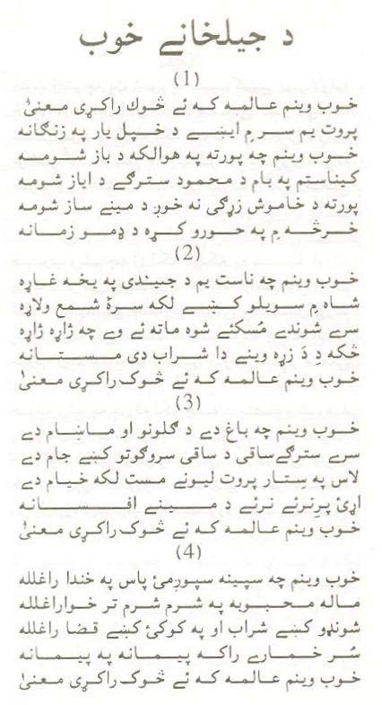
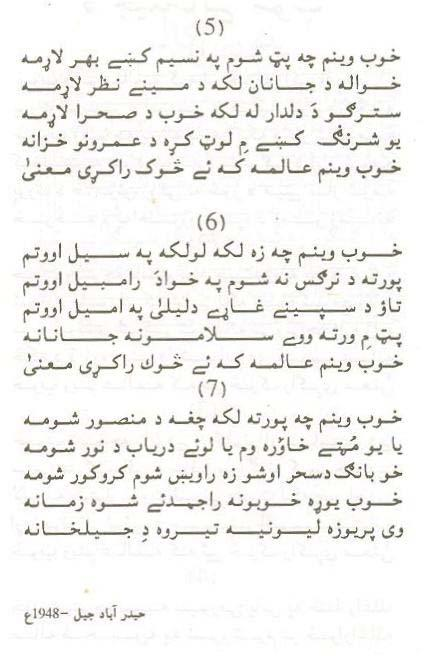
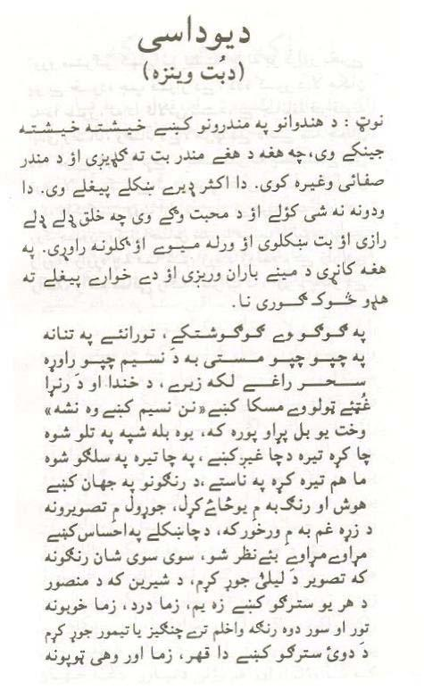
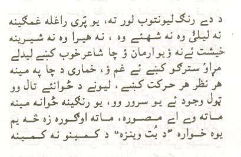
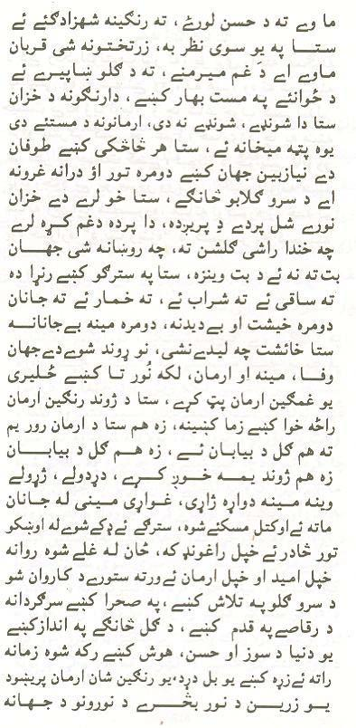
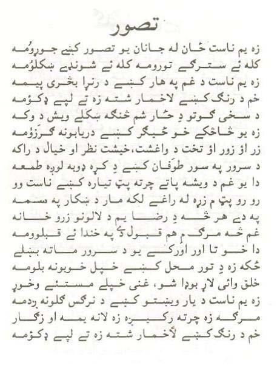
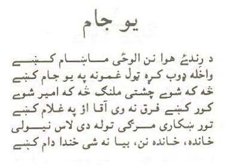
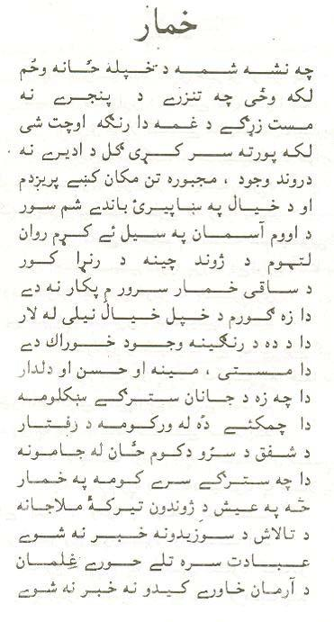
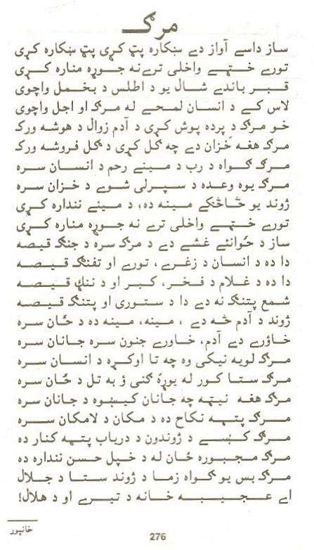
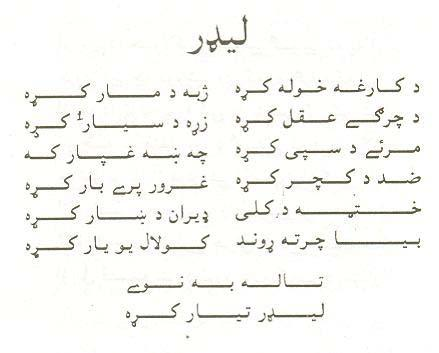
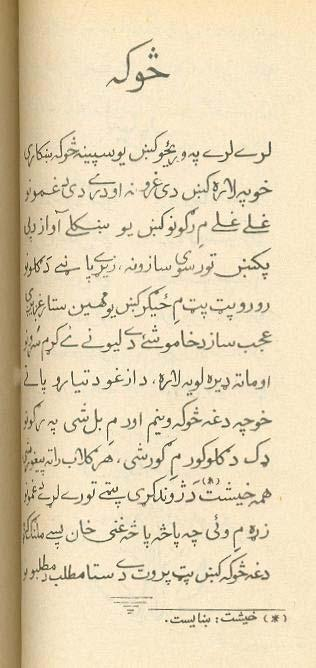
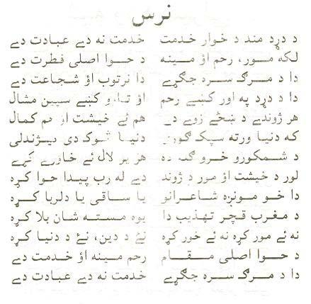
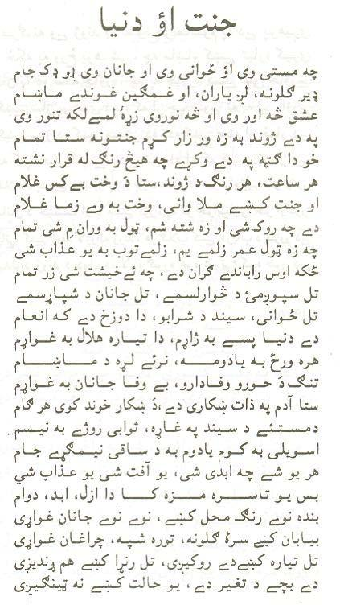
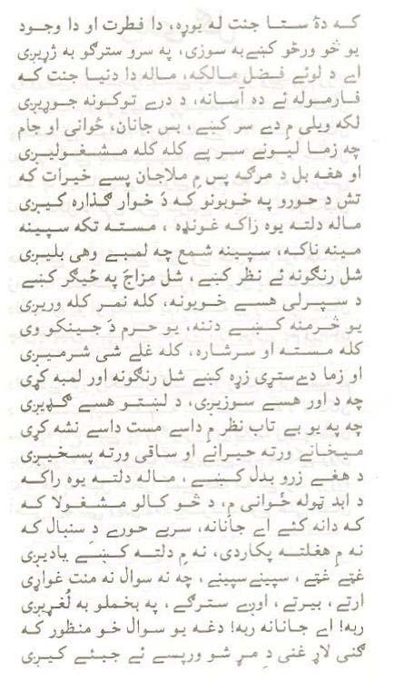
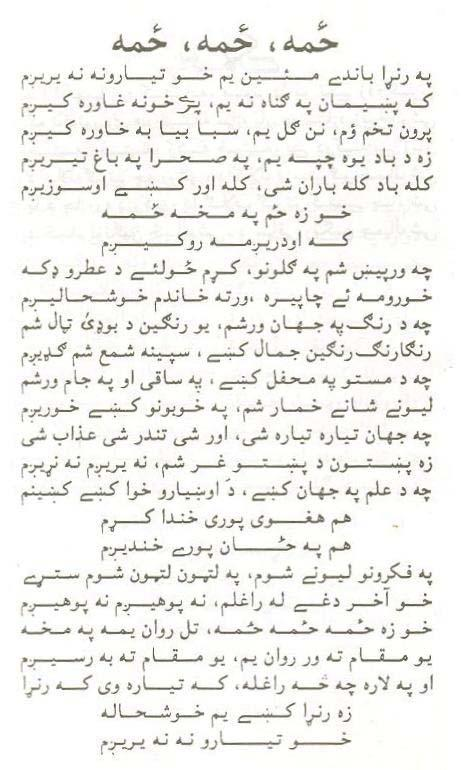
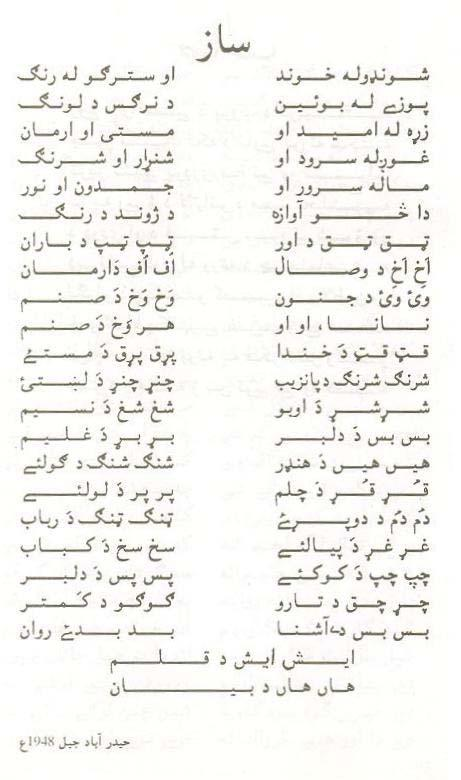
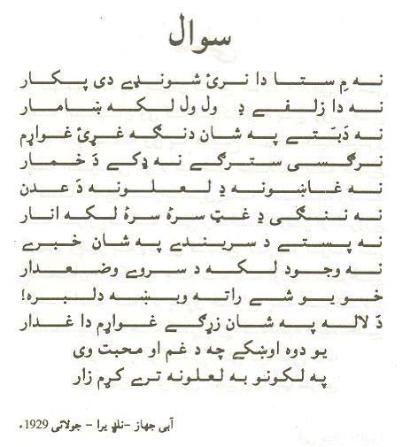